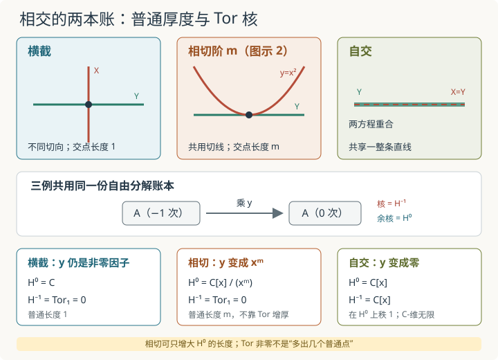

本页目录
基础衔接 16 · 相交、接触阶与 Tor：相切为什么未必产生高次同调？
先修：张量积与 Tor、非平坦族与导出纤维。本讲只在复仿射平面里计算三组闭子概形的相交：横截、相切和自交。目标是把“普通交点环有多厚”与“导出张量是否还有核”分开，而不是把每一种非横截现象都叫作额外交点。
两条曲线在原点碰到一起，Tor 会自动出现吗？
1. 先把三幅图压进同一个两项复形
固定环境环
以及横轴
另一条曲线或子空间记作 \(X=\operatorname{Spec}A\)。普通相交 \(X\cap Y\) 的坐标环是
这已经保留了交点的概形结构：例如 \(\mathbb C[x]/(x^2)\) 不只是一个集合点，而是一个长度为 2 的非约化点。但普通张量只给余核。若想知道张量过程中有没有丢掉单射，还要保留 \(R\) 的自由分解
因为 \(B\) 是整环，乘 \(y\) 的确单射。把两个自由项与 \(A\) 张量，得到统一账本
因此每个例子都只需回答两个朴素问题：在 \(A\) 中，谁乘 \(y\) 后变成零？把 \(y\) 设成零以后还剩什么？答案分别是
由于所用自由分解长度为 1，本讲全部例子都有 \(\operatorname{Tor}_i^B(A,R)=0\)（\(i\ge2\)）。这不是一般相交理论的高阶消失定理，只是这一个超曲面 \(Y=V(y)\) 的分解足够短。
2. 横截：一个普通点，且没有隐藏的核
先取竖轴
在 \(A_\perp\) 中乘 \(y\) 是多项式环里的乘法，所以没有非零元素被杀死：
由此
几何上，两条曲线的切向量方向不同；代数上，方程 \(x,y\) 在原点给出两个独立方向。普通交点是一个约化点，局部环的复长度为 1，导出张量没有额外同调。
这里的“横截”可以用梯度看见：\(\nabla x=(1,0)\) 与 \(\nabla y=(0,1)\) 线性无关。但真正完成 Tor 计算的仍是上面的核与余核，不能只凭图形角度猜答案。
3. 相切：普通交点变厚，Tor 仍然可以为零
再取抛物线
在这个同构中，\(y\) 的作用就是乘 \(x^2\)。共同账本于是变成
多项式环 \(\mathbb C[x]\) 没有零因子，所以乘 \(x^2\) 仍然单射：
但余核不再是一个约化点：
它以 \(1,x\) 为复向量空间基，长度为 2。几何上，\(y=x^2\) 与 \(y=0\) 在原点共用切线；代数上，把 \(y\) 设成零后留下 \(x^2=0\)。所以相切已经被普通交点环的幂零结构和长度记录，不需要靠非零 \(\operatorname{Tor}_1\) 才能被看见。
这给出本讲最重要的反例：
\(\nabla(y-x^2)|_{(0,0)}=(0,1)\) 与 \(\nabla y=(0,1)\) 相同，说明它们相切；然而 \(y=x^2\) 在 \(A_{\rm tan}\) 中仍是非零因子，故核为零。切向条件与 Tor 独立性有关联，却不是在所有闭子概形上可以互换的同一句话。
4. 自交：普通交集是一整条线，负一次同调也是一整份模
最后让 \(X\) 就是 \(Y\)：
现在 \(y\) 在 \(A_{\rm self}\) 中已经等于零，张量后的微分是零映射：
因此
这里两项都是无限维复向量空间，不能在实验里伪装成某个有限数字。更准确的报告方式是：\(H^{-1}\) 是普通交点环 \(H^0=\mathbb C[x]\) 上的秩 1 自由模。它由次数 \(-1\) 的类生成，不是在线上又添了无穷多个普通点。
自交中，普通张量只说“这条线与自己相交后仍是这条线”；导出张量还记下定义方程在这条线上完全失去约束力。这个核是导出信息，但不能脱离其模结构只数一个维数。

图形中的“碰法”先变成 \(A\xrightarrow{y}A\) 的代数问题：余核描述普通交点，核描述负一次同调。接触阶变大与核出现是两项不同检查。
5. 把三例放在一张账本里
| 情形 | 在 \(A\) 中的 \(y\) | \(H^0=A/yA\) | 普通交点信息 | \(H^{-1}=\operatorname{ann}_A(y)\) |
|---|---|---|---|---|
| \(x=0\) 与 \(y=0\) | \(y\) | \(\mathbb C\) | 约化点，长度 1 | \(0\) |
| \(y-x^2=0\) 与 \(y=0\) | \(x^2\) | \(\mathbb C[x]/(x^2)\) | 相切双点，长度 2 | \(0\) |
| \(y=0\) 与自身 | \(0\) | \(\mathbb C[x]\) | 一整条共享直线，不是有限长度交点 | \(\mathbb C[x]\)，在 \(H^0\) 上秩 1 |
这张表不把“长度 2”和“有一份 Tor”相加。相切例的长度 2 全部已经在 \(H^0\)；自交例的 \(H^{-1}\) 则位于另一个同调次数。只有在额外假设下，Tor 的交错长度才进入经典相交重数公式；本讲没有建立那个一般定理。
6. 实验怎样读：先选碰法，再预测微分
实验的三个案例共享同一套流程。
- 横截：\(X=V(x)\)。应显示微分为乘 \(y\)，\(H^0=\mathbb C\)、长度 1、\(\operatorname{Tor}_1=0\)。
- 相切：\(X=V(y-x^m)\)，接触阶滑块 \(m=2,\ldots,6\)。应显示微分为乘 \(x^m\)，\(H^0=\mathbb C[x]/(x^m)\)、长度 \(m\)、\(\operatorname{Tor}_1=0\)。增大 \(m\) 只增加普通交点长度。
- 自交：\(X=Y=V(y)\)。应显示零微分，\(H^0=\mathbb C[x]\)、\(\operatorname{Tor}_1=\mathbb C[x]\)；两者的复维数都应标为无限，而后者应另报为 \(H^0\)-模秩 1。
先在纸上写出 \(A\) 和“\(y\) 在 \(A\) 中变成什么”，再切换案例。图上的曲线只是几何提示；核与余核才是答案。相切案例的 \(m\) 控件对横截和自交没有数学作用，不应把它误读为所有案例的参数。
无脚本后备：横截输出为 \((H^0,H^{-1})=(\mathbb C,0)\)；相切阶 \(m\) 输出为 \((\mathbb C[x]/(x^m),0)\)，普通长度为 \(m\)；自交输出为 \((\mathbb C[x],\mathbb C[x])\)，负一次同调在普通交点环上秩 1。全部案例的 \(H^{-i}\) 在 \(i\ge2\) 时为零。
7. 两道迁移题
题一。 把抛物线换成
仍与 \(Y=V(y)\) 相交。计算全部 Tor，并解释 \(m=1\) 与 \(m>1\) 的几何差异。接触阶能否只从 \(\operatorname{Tor}_1\) 读出？
查看答案：接触阶写在余核，不在本例的核
有
其中乘 \(y\) 就是乘 \(x^m\)。它对每个 \(m\ge1\) 都是单射，所以
普通交点环为
复长度为 \(m\)。\(m=1\) 时两条曲线横截，普通交点约化；\(m>1\) 时共用切线，长度记录接触阶。本族里所有 \(m\) 的 \(\operatorname{Tor}_1\) 都为零，所以不能从它单独恢复接触阶。
题二。 取
\(X\) 是两条坐标轴的并，而 \(Y\) 是其中一条共享分量。令 \(A=B/(xy)\)。计算 \(H^0\)、\(H^{-1}\) 和更高 Tor，并说明 \(H^{-1}\) 为什么不是“多出来的一条普通直线”。
查看答案：共享分量让乘 y 出现核
仍使用同一个复形
余核为
若 \([f]y=0\) 于 \(A\)，则 \(fy\in(xy)\)；在多项式环中可约去 \(y\)，得到 \(f\in(x)\)。因此
理想 \((x)\) 由共享横轴上的函数倍数生成；作为 \(H^0\cong\mathbb C[x]\)-模，它同构于 \(x\mathbb C[x]\)，因而秩为 1。它处在次数 \(-1\)，普通交点仍由 \(H^0\) 给出；把两者都画成一条线，不代表它们是两个集合论分量。自由分解长度为 1，所以 \(\operatorname{Tor}_i=0\)（\(i\ge2\)）。
8. 哪些结论可以带走，哪些还不能？
本讲严格建立的是以下局部代数事实：
- 普通相交环是 \(H^0=A/yA\)，它本身可以携带幂零元和有限接触长度；
- \(H^{-1}=\operatorname{ann}_A(y)\) 检测定义方程 \(y\) 在另一方坐标环中是否成为零因子；
- 横截例与相切例都 Tor 独立，但普通交点长度不同；自交与共享分量例出现非零 Tor；
- 非零 Tor 是一个带模结构、带同调次数的对象，不是可直接解释成“额外几个交点”的计数器。
这些计算没有证明一般的正则嵌入判据、过量交丛公式、相交重数的 Tor 交错和，也没有构造完整导出概形。进入前沿内容时，要继续追踪局部化、模结构与乘法，而不能只保留“有没有 Tor”这个布尔标签。
速查与资料
从张量积与 Tor带来的自由分解，在非平坦族与导出纤维中检测参数杀死的挠元，本讲则把同一机制放进相交。接下来可回到几何 Langlands 的导出自交入口，比较“点在直线内自交”与这里“直线在平面内自交”的同一模式。
Tor 由自由分解张量后的同调定义，见 Stacks Project：Tor groups and flatness；高次 Tor 全消失称为 Tor 独立，见 Tor independence；Tor 在经典相交重数中的使用及其附加假设见 Intersection multiplicities using Tor formula。本讲三个核心例子均已在正文由两项自由分解直接计算。资料核查：2026-09-08。